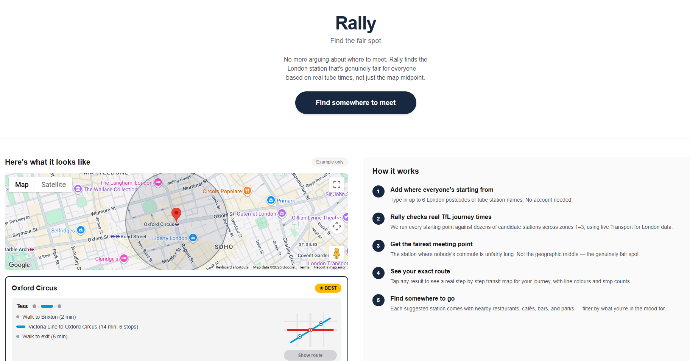
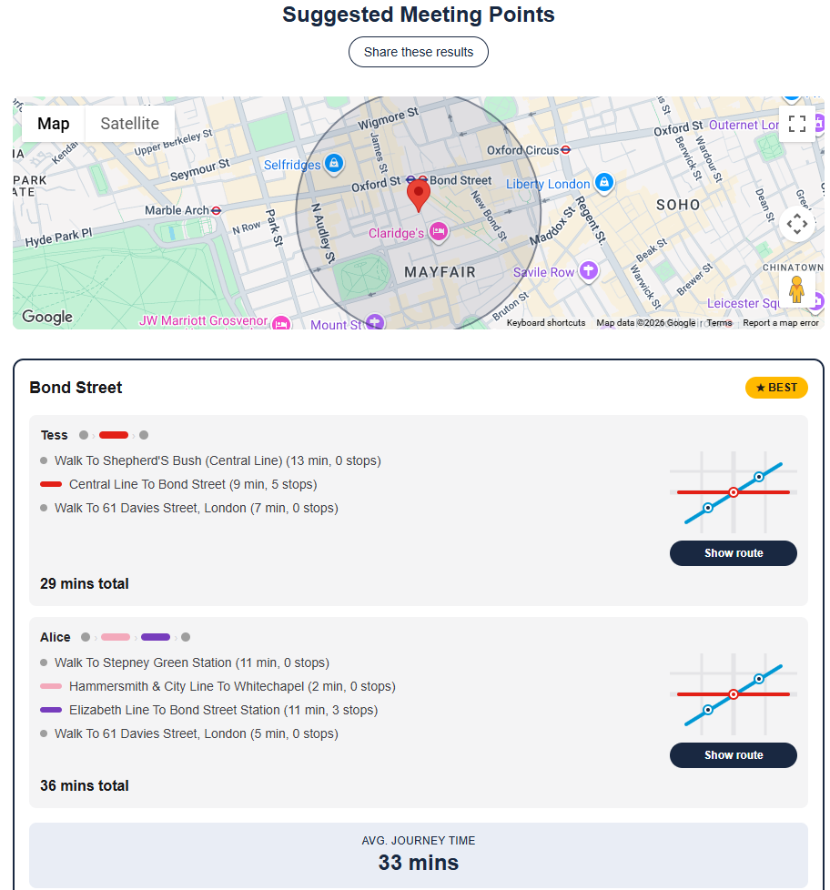
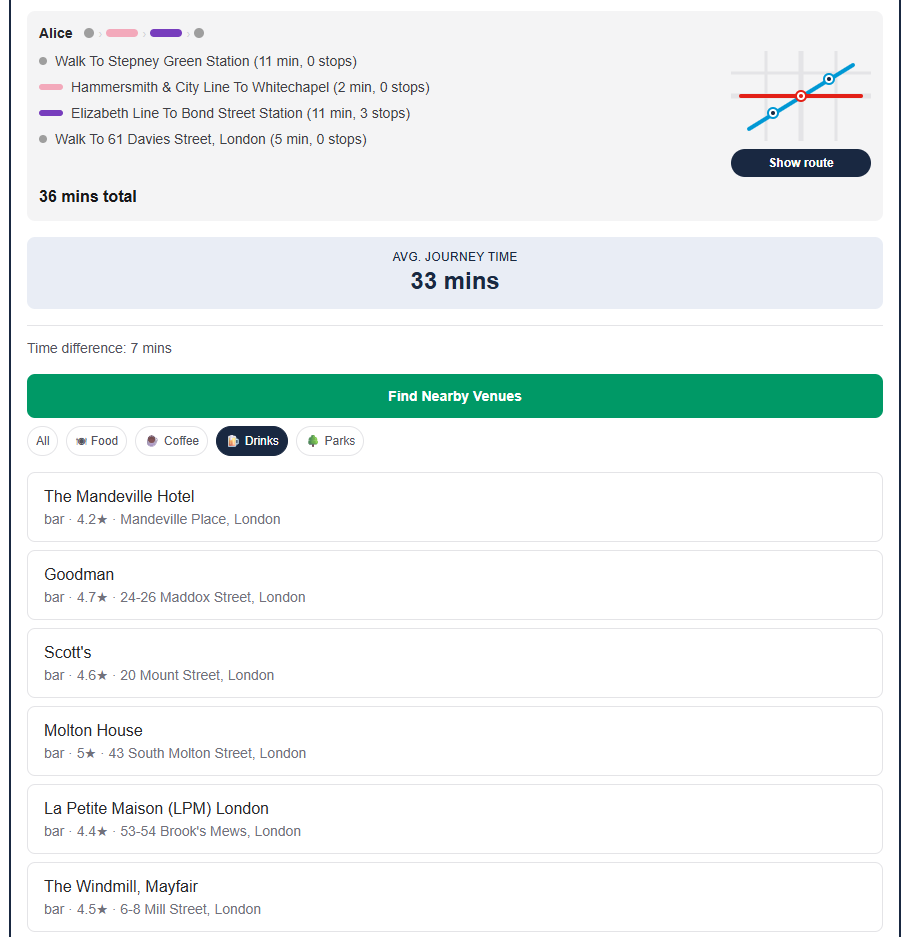

Rally
A web app that finds the fairest London meeting point for a group, based on real TfL journey times rather than the geographic midpoint. Everyone adds their starting station, Rally checks live journey times across zones, and suggests the spot where nobody's commute is unfairly long, plus nearby venues to meet at. Try it live at joinrally.place.
Next.js · TypeScript · TfL API · Google Places API


